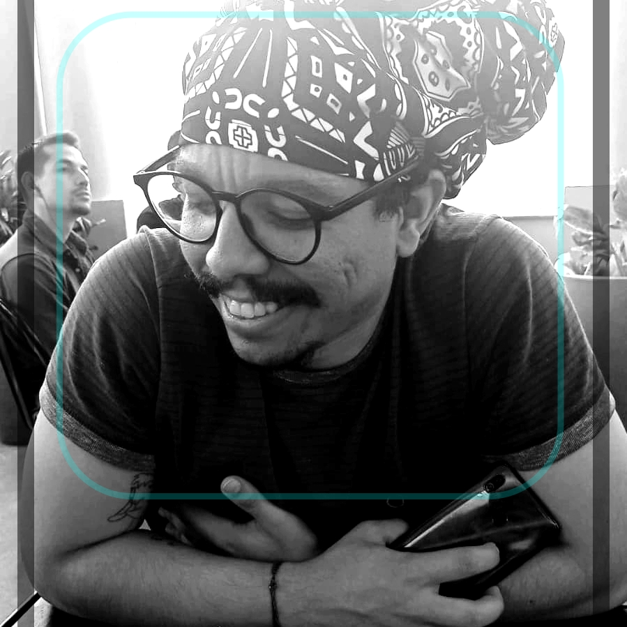

Eleve seu negócio digital a outro nível com um pesquisador de qualidade!
Olá! Sou Lucas B. Araujo, ciêntista social, pesquisador do Usuário (UX Research) com especialidade em Analise de dados, experiencia em programação com C#, Pandas, HTML e CSS. Ajudo empresas a analisar os dados, assim como copila-los da melhor forma, para um desenvolvimento saúdavel de seu negocio. Atualmente desenvolvendo-se mais como programador em C# Vamos conversar?
 Github
Github
 Linkedin
Linkedin
 Instagram
Instagram
